1040B32 FRONT FUEL DELIVERY LINE - R.R.
- Path
- Procedures > 10 ENGINE > 1040 FUEL TANK AND PIPES > 1040B FUEL SUPPLY/RETURN CIRCUIT PIPE > 1040B32 FRONT FUEL DELIVERY LINE - R.R.
- Kind
- repair procedure (removal / refitting; the operation number is the code)
- Applies to
- all engines; all production periods
- Interactive page
- https://sloeber94.github.io/elrnDB-fCrm/en/#/194000292
Applies to: engines: 2.2; all production periods
 Removing
Removing
 Refitting
Refitting- Position the vehicle on a lift.
1. Remove the sound insulation cover fastened to the engine by three pins.
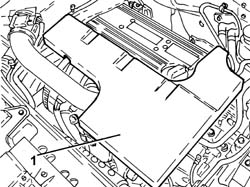
Applies to: engines: 2.2; all production periods
1. Loosen the band and disconnect the engine oil vapour recovery pipe from the cylinder head cover.
2. Loosen the bands and remove the air supply hose from the air flow meter to the throttle casing.
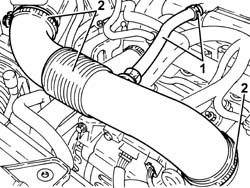
Applies to: engines: 2.2; all production periods
1. Connect the tool to the bleed valve on the fuel supply pipe and discharge the fuel pressure.
Tool | Description | Function | Validity |
|---|---|---|---|
2000002900 | Breather connector | Fuel system pressure drainage | 1.8 2.2 |
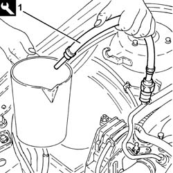
Applies to: engines: 2.2; all production periods
1. Undo the connector (1a), disconnect the front fuel supply pipe (1b), fuel manifold pipe side.
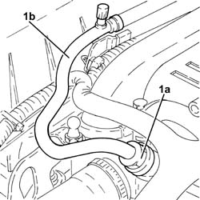
Applies to: engines: 2.2; all production periods
- Release the front fuel supply pipe from the fastenings in the engine compartment.
Op. 4450B04 RIGHT FRONT WHEEL - R.R
1. Working underneath the vehicle, undo the bolts (1a) and remove the front pipe protection (1b).
Applies to: engines: 2.2; all production periods
1. Undo the bolts and remove the rear pipe protection.
2. Undo the bolts (2a) and remove the bracket (2b).
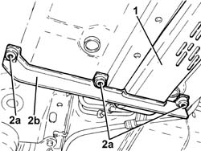
Applies to: engines: 2.2; all production periods
1. Undo the bolts (1a), loosen the bolt (1b) and turn the underbody reinforcement (1c) sideways.
Applies to: engines: 2.2; all production periods
1. Disconnect the rapid connector (1a) and remove the front fuel supply pipe (1b).
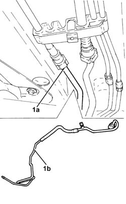
Applies to: engines: 2.2; all production periods
Refitting
Removing- Place the front fuel supply pipe in its housing and connect the rapid connector.
1. Place the underbody reinforcement (1a) in its housing and secure it tightening the new bolts (1b) and (1c) to the recommended torque.
Component | Fastening | dia | Value (daNm) | Validity |
|---|---|---|---|---|
Underbody reinforcements | Inner bolt (to replace) | M12 | (bodyshell side) 8.1 - 9.9 + 45° |
Component | Fastening | dia | Value (daNm) | Validity |
|---|---|---|---|---|
Underbody reinforcements | Outer bolt (to replace) | M10 | (bodyshell side) 5.0 - 6.1 + 45° |
Component | Fastening | dia | Value (daNm) | Validity |
|---|---|---|---|---|
Underbody reinforcements | Bolt (to be replaced) | M12 | (front suspension frame side) 9.0 - 11.0 + 90° |
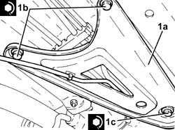
Applies to: engines: 2.2; all production periods
- Fit the bracket in its housing and secure it using the bolts.
- Place the rear pipe guard in its housing and secure it using the bolts.
- Place the front pipe guard in its housing and secure it using the bolts.
Op. 4450B04 RIGHT FRONT WHEEL - R.R
- Secure the front fuel supply pipe using the fastenings in the engine compartment.
1. Connect the front fuel supply pipe (1a), fuel manifold pipe side and tighten the connector (1b) to the recommended torque.
Component | Fastening | dia | Value (daNm) | Validity |
|---|---|---|---|---|
Front fuel supply pipe | Connector | - | (fuel manifold side) 1.0 | 2.2 |
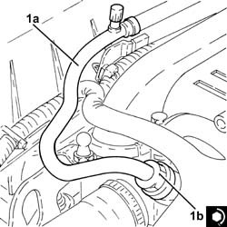
Applies to: engines: 2.2; all production periods
- Place the air supply hose from the air flow meter to the throttle casing back in its housing and secure it using the bands.
- Connect the engine oil vapour recovery pipe to the cylinder head cover and secure it using the band.
- Place the sound insulation cover back in its housing and secure it to the engine using the three pins.
- Remove the vehicle from the lift.
Applies to: engines: 1.9 JTD 8v, 1.9 JTD 16v, 2.4 JTD 20v; all production periods
Removing
Refitting- Position the vehicle on a lift.
Op. 1016A10 SOUND-PROOFING COVER - R.R
1. Disconnect the rapid connector for the front fuel supply pipe, rear fuel supply pipe side.
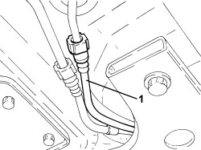
Applies to: engines: 1.9 JTD 8v, 1.9 JTD 16v, 2.4 JTD 20v; all production periods
- Disconnect the rapid connector for the front fuel supply pipe, fuel filter side.
- Remove the front fuel delivery pipe after releasing from the retaining collars.
Applies to: engines: 1.9 JTD 8v, 1.9 JTD 16v, 2.4 JTD 20v; all production periods
Refitting
Removing- Refit the front fuel delivery pipe and secure it with collars.
- Connect the rapid connector for the front fuel supply pipe, fuel filter side.
- Connect the rapid connector for the front fuel supply pipe, rear fuel supply pipe side.
Op. 1016A10 SOUND-PROOFING COVER - R.R
- Remove the vehicle from the lift.
Applies to: engines: 1.8; all production periods
Removing
Refitting1. Undo the plug and fit the connector to discharge the fuel pressure.
Tool | Description | Function | Validity |
|---|---|---|---|
2000002900 | Breather connector | Fuel system pressure drainage | 1.8 2.2 |
- Use a suitable container for collecting the fuel.
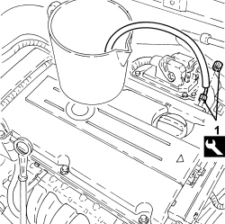
Applies to: engines: 1.8; all production periods
1. Disconnect the rapid connector for the front fuel pipe, manifold pipe side.
2. Disconnect the front fuel pipe from the fastening clips in the engine compartment.
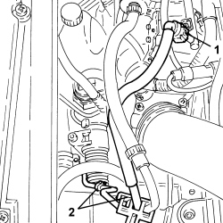
Applies to: engines: 1.8; all production periods
Op. 4450B04 RIGHT FRONT WHEEL - R.R
1. Working from beneath the vehicle, undo the bolts (1a) and remove the front pipe protection (1b).
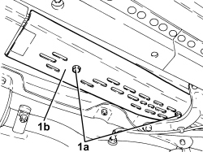
Applies to: engines: 1.8; all production periods
1. Unscrew the bolts and remove the rear pipe protection.
2. Undo the bolts (2a) and remove the bracket (2b).

Applies to: engines: 1.8; all production periods
1. Unscrew the bolts (1a), loosen the bolt (1b) and turn the underbody reinforcement (1c) slowly.
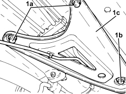
Applies to: engines: 1.8; all production periods
1. Disconnect the rapid connector (1a) and remove the front fuel supply pipe (1b).
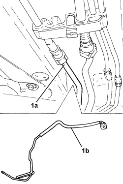
Applies to: engines: 1.8; all production periods
Refitting
Removing- Place the front fuel supply pipe in its housing and connect the rapid connector.
- Place the underbody reinforcement in position and secure it tightening the bolts to the recommended torque.
Component | Fastening | dia | Value (daNm) | Validity |
|---|---|---|---|---|
Underbody reinforcements | Inner bolt (to replace) | M12 | (bodyshell side) 8.1 - 9.9 + 45° |
Component | Fastening | dia | Value (daNm) | Validity |
|---|---|---|---|---|
Underbody reinforcements | Outer bolt (to replace) | M10 | (bodyshell side) 5.0 - 6.1 + 45° |
Component | Fastening | dia | Value (daNm) | Validity |
|---|---|---|---|---|
Underbody reinforcements | Bolt (to be replaced) | M12 | (front suspension frame side) 9.0 - 11.0 + 90° |
- Fit the bracket in its housing and secure it using the bolts.
- Place the rear pipe protection in its housing and secure it using the bolts.
- Place the front pipe protection in its housing and secure it using the bolts.
- Connect the front fuel pipe in the engine compartment using the retaining clips.
- Connect the rapid connector for the front fuel pipe, manifold pipe side.